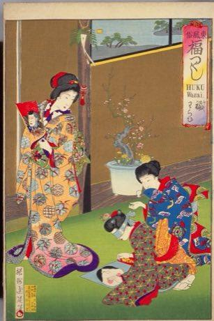
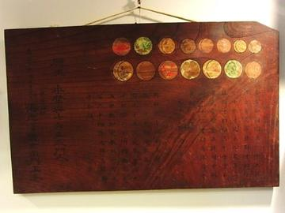
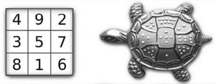
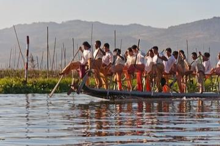
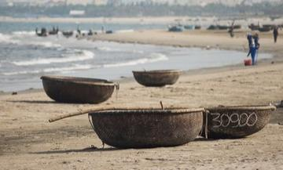
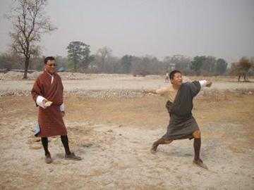
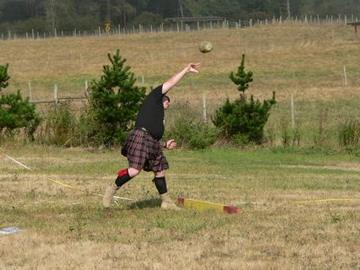

Heavy wooden darts with nail tips are thrown underarm at a small upright board; teams score for hits and closeness.
Heritage note
Part of the living heritage of Bhutan.
Origins
Usually placed in the era of Age of Contact and Craft (about 1500 to 1800), although its exact origins are uncertain, within the cultural world of South Asia.
Sources
Related entries


Fukuwarai
Japan · Puzzles and mind games
Sangaku Geometry Puzzles
Japan · Puzzles and mind games


Thung chai basket-boat spinning
Vietnam · Racing
More from Bhutan

Digor
Bhutan · Archery, throwing and target games
Kira and Kushuthara backstrap weaving
Bhutan · Crafts and making
Stone put
Bhutan +1 · Dexterity and skill gamesDego
Bhutan · Dexterity and skill gamesYam
Bhutan · Board and table games